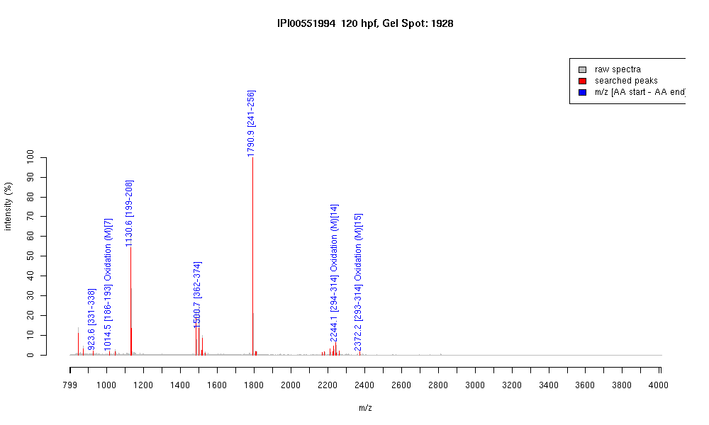

| Name | "Actin, alpha 2, smooth muscle, aorta" |
|---|---|
| MW | 41967.8 |
| PI | 5.23 |
| Mascot Protein Score | 116 |
| Masses (matched / unmatched) | 7 / 24 |

| Peptide | MZ (calc) | MZ (observed) | Error (DA) | Error (PPM) | Start | Stop | Modifications |
|---|---|---|---|---|---|---|---|
| IIAPPERK | 923.5672 | 923.5758 | 0.0086 | 9 | 331 | 338 | |
| DLTDYLMK | 1014.4812 | 1014.4719 | -0.0093 | -9 | 186 | 193 | Oxidation (M)[7] |
| GYSFVTTAER | 1130.5476 | 1130.5503 | 0.0027 | 2 | 199 | 208 | |
| QEYDEAGPSIVHR | 1500.7078 | 1500.6984 | -0.0094 | -6 | 362 | 374 | |
| SYELPDGQVITIGNER | 1790.8918 | 1790.8925 | 0.0007 | 0 | 241 | 256 | |
| DLYANNVLSGGTTMYPGIADR | 2244.0601 | 2244.0581 | -0.002 | -1 | 294 | 314 | Oxidation (M)[14] |
| KDLYANNVLSGGTTMYPGIADR | 2372.155 | 2372.168 | 0.013 | 5 | 293 | 314 | Oxidation (M)[15] |